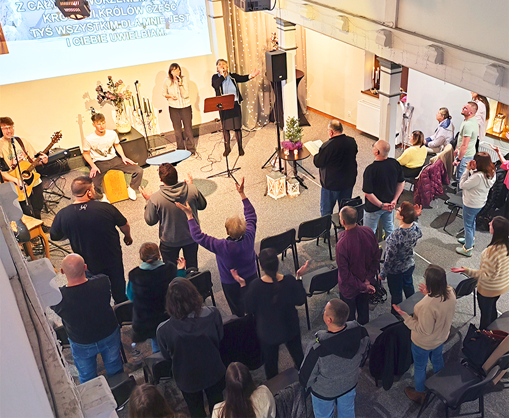
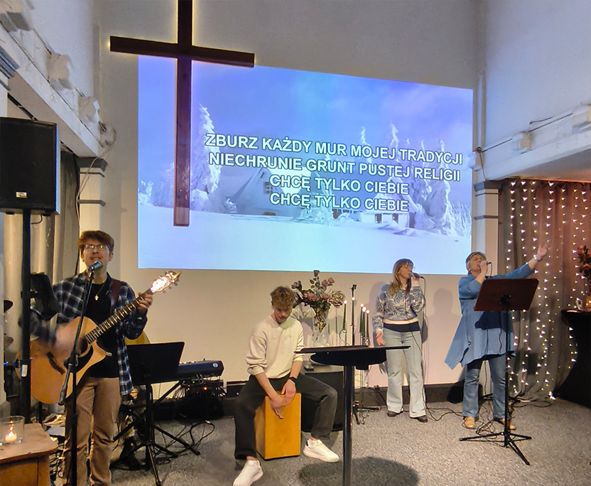
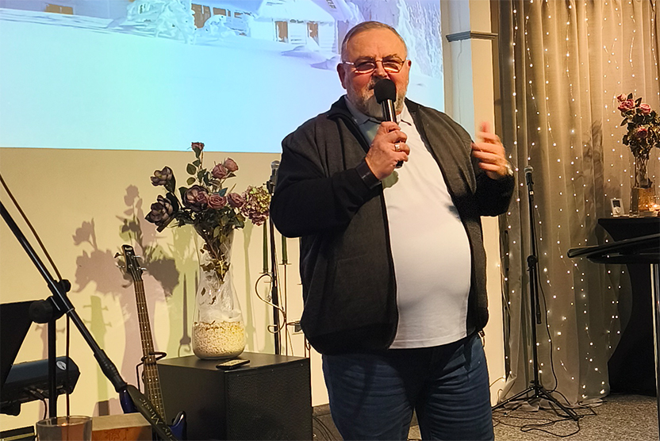
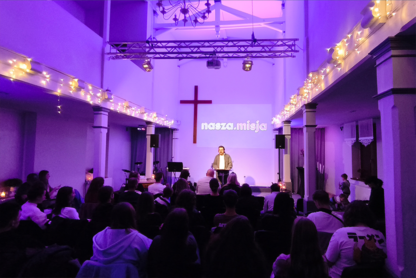
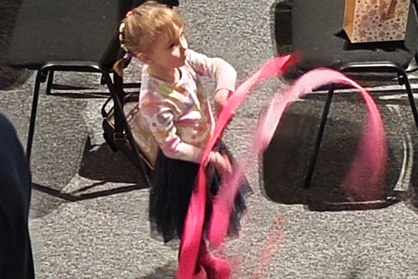
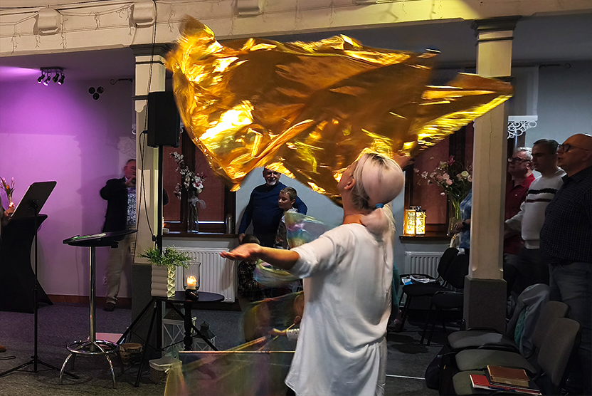
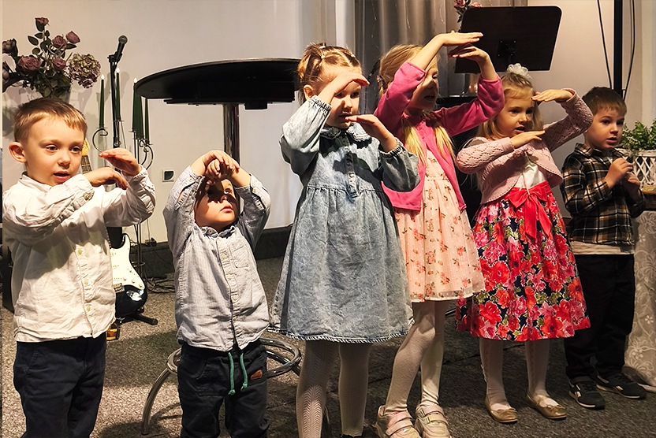
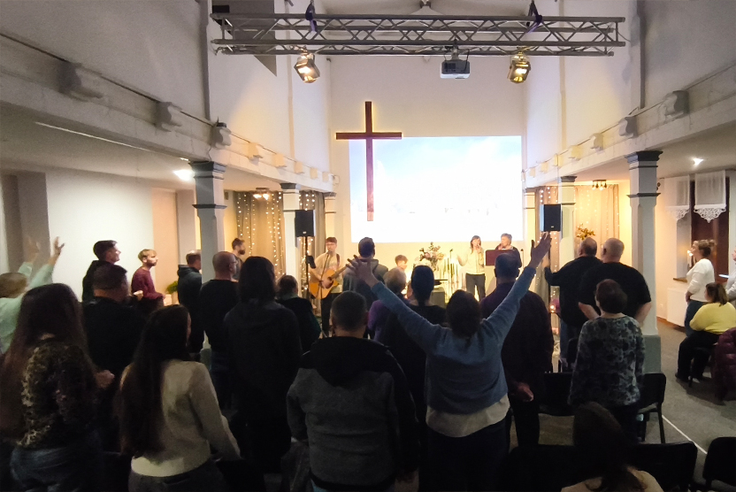

Kościół
to nie budynek. To my. Ludzie, którzy kochają Boga, Jezusa i Ducha Świętego. Pismo Święte i prawda Ewangelii jest fundamentem naszej wiary. Naszym celem jest relacja — z Bogiem i z drugim człowiekiem. Wspólnie się modlimy, wspieramy i spędzamy razem czas. Tworzymy przestrzeń otwartą dla każdego. Możesz przyjść taki/taka, jaki/jaka jesteś...
Nasze spotkania są pełne życia, inspiracji i przestrzeni do spotkania z Duchem Świętym. Nie jesteśmy idealni, też się uczymy i popełniamy błędy. Niezależnie od tego, na jakim etapie swojej drogi jesteś — znajdziesz tu miejsce dla siebie. Wierzymy, że wiara nie jest teorią, ale doświadczeniem, które zmienia codzienność. Wierzymy, że Jezus naprawdę działa i zmienia życie – wiemy to z własnego doświadczenia.
Naszą misją jest żyć według Bożych zasad, dzielić się dobrą wiadomością o Jezusie i wnosić nadzieję tam, gdzie jej brakuje. Wierzymy, że każdy z nas ma znaczenie i może być częścią czegoś większego. Chcemy tworzyć kulturę Bożego Królestwa w codzienności — w naszych domach, pracy, w szkole oraz w naszym mieście. Zapraszamy Cię, pozwól nam Cię poznać.







